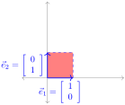
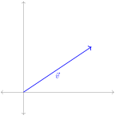
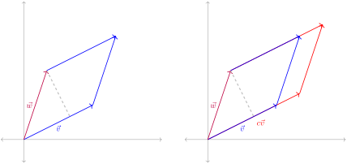
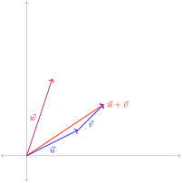
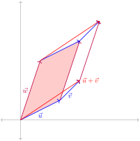
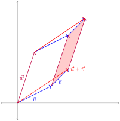
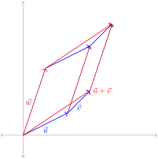

Describe how a row operation affects the determinant of a matrix.
Subsection5.1.1Class Activities
Activity5.1.1.
The image in Figure 46 illustrates how the linear transformation \(T : \IR^2 \rightarrow \IR^2\) given by the standard matrix \(A = \left[\begin{array}{cc} 2 & 0 \\ 0 & 3 \end{array}\right]\) transforms the unit square.
Figure46.Transformation of the unit square by the matrix \(A\text{.}\)
(a)
What are the lengths of \(A\vec e_1\) and \(A\vec e_2\text{?}\)
(b)
What is the area of the transformed unit square?
Activity5.1.2.
The image below illustrates how the linear transformation \(S : \IR^2 \rightarrow \IR^2\) given by the standard matrix \(B = \left[\begin{array}{cc} 2 & 3 \\ 0 & 4 \end{array}\right]\) transforms the unit square.
Figure47.Transformation of the unit square by the matrix \(B\)
(a)
What are the lengths of \(B\vec e_1\) and \(B\vec e_2\text{?}\)
(b)
What is the area of the transformed unit square?
Observation5.1.3.
It is possible to find two nonparallel vectors that are scaled but not rotated by the linear map given by \(B\text{.}\)
Figure48.Certain vectors are stretched out without being rotated.
The process for finding such vectors will be covered later in this chapter.
Observation5.1.4.
Notice that while a linear map can transform vectors in various ways, linear maps always transform parallelograms into parallelograms, and these areas are always transformed by the same factor: in the case of \(B=\left[\begin{array}{cc} 2 & 3 \\ 0 & 4 \end{array}\right]\text{,}\) this factor is \(8\text{.}\)
Figure49.A linear map transforming parallelograms into parallelograms.
Since this change in area is always the same for a given linear map, it will be equal to the value of the transformed unit square (which begins with area \(1\)).
Remark5.1.5.
We will define the determinant of a square matrix \(B\text{,}\) or \(\det(B)\) for short, to be the factor by which \(B\) scales areas. In order to figure out how to compute it, we first figure out the properties it must satisfy.
Figure50.The linear transformation \(B\) scaling areas by a constant factor, which we call the determinant
Activity5.1.6.
The transformation of the unit square by the standard matrix \([\vec{e}_1\hspace{0.5em} \vec{e}_2]=\left[\begin{array}{cc}1&0\\0&1\end{array}\right]=I\) is illustrated below. If \(\det([\vec{e}_1\hspace{0.5em} \vec{e}_2])=\det(I)\) is the area of resulting parallelogram, what is the value of \(\det([\vec{e}_1\hspace{0.5em} \vec{e}_2])=\det(I)\text{?}\)

Figure51.The transformation of the unit square by the identity matrix.
The value for \(\det([\vec{e}_1\hspace{0.5em} \vec{e}_2])=\det(I)\) is:
0
1
2
4
Activity5.1.7.
The transformation of the unit square by the standard matrix \([\vec{v}\hspace{0.5em} \vec{v}]\) is illustrated below: both \(T(\vec{e}_1)=T(\vec{e}_2)=\vec{v}\text{.}\) If \(\det([\vec{v}\hspace{0.5em} \vec{v}])\) is the area of the generated parallelogram, what is the value of \(\det([\vec{v}\hspace{0.5em} \vec{v}])\text{?}\)

Figure52.Transformation of the unit square by a matrix with identical columns.
The value of \(\det([\vec{v}\hspace{0.5em} \vec{v}])\) is:
0
1
2
4
Activity5.1.8.
The transformations of the unit square by the standard matrices \([\vec{v}\hspace{0.5em} \vec{w}]\) and \([c\vec{v}\hspace{0.5em} \vec{w}]\) are illustrated below. Describe the value of \(\det([c\vec{v}\hspace{0.5em} \vec{w}])\text{.}\)

Figure53.The parallelograms generated by \(\vec{v}\) and \(\vec{w}\)/\(c\vec{w}\)
Describe the value of \(\det([c\vec{v}\hspace{0.5em} \vec{w}])\text{:}\)
Consider the vectors \(\vec{u}\text{,}\)\(\vec{v}\text{,}\)\(\vec{u}+\vec{v}\text{,}\) and \(\vec{w}\) displayed below. Each pair of vectors generates a parallelogram, and the area of each parallelogram can be described in terms of determinants.

Figure54.The vectors \(\vec{u}\text{,}\)\(\vec{v}\text{,}\)\(\vec{u}+\vec{v}\) and \(\vec{w}\)
For example, \(\det([\vec{u}\hspace{0.5em} \vec{w}])\) represents the shaded area shown below.

Figure55.Parallelogram generated by \(\vec{u}\) and \(\vec{w}\)
Similarly, \(\det([\vec{v}\hspace{0.5em} \vec{w}])\) represents the shaded area shown below.

Figure56.Parallelogram generated by \(\vec{v}\) and \(\vec{w}\)
Activity5.1.9.
The paralellograms generated by the standard matrices \([\vec{u}\hspace{0.5em} \vec{w}]\text{,}\)\([\vec{v}\hspace{0.5em} \vec{w}]\) and \([\vec{u}+\vec{v}\hspace{0.5em} \vec{w}]\) are illustrated below.

Figure57.Parallelogram generated by \(\vec{u}+\vec{v}\) and \(\vec{w}\)
Describe the value of \(\det([\vec{u}+\vec{v}\hspace{0.5em} \vec{w}])\text{.}\)
The determinant is the unique function \(\det:M_{n,n}\to\IR\) satisfying these properties:
\(\displaystyle \det(I)=1\)
\(\det(A)=0\) whenever two columns of the matrix are identical.
\(\det[\cdots\hspace{0.5em}c\vec{v}\hspace{0.5em}\cdots]=
c\det[\cdots\hspace{0.5em}\vec{v}\hspace{0.5em}\cdots]\text{,}\) assuming no other columns change.
\(\det[\cdots\hspace{0.5em}\vec{v}+\vec{w}\hspace{0.5em}\cdots]=
\det[\cdots\hspace{0.5em}\vec{v}\hspace{0.5em}\cdots]+
\det[\cdots\hspace{0.5em}\vec{w}\hspace{0.5em}\cdots]\text{,}\) assuming no other columns change.
Note that these last two properties together can be phrased as “The determinant is linear in each column.”
Observation5.1.11.
The determinant must also satisfy other properties. Consider \(\det([\vec v \hspace{1em}\vec w+c \vec{v}])\) and \(\det([\vec v\hspace{1em}\vec w])\text{.}\)
Figure58.Parallelogram built by \(\vec{w}+c\vec{v}\) and \(\vec{w}\)
The base of both parallelograms is \(\vec{v}\text{,}\) while the height has not changed, so the determinant does not change either. This can also be proven using the other properties of the determinant:
Swapping columns may be thought of as a reflection, which is represented by a negative determinant. For example, the following matrices transform the unit square into the same parallelogram, but the second matrix reflects its orientation.
To summarize, we've shown that the column versions of the three row-reducing operations a matrix may be used to simplify a determinant in the following way:
Multiplying a column by a scalar multiplies the determinant by that scalar:
The transformation given by the standard matrix \(A\) scales areas by \(4\text{,}\) and the transformation given by the standard matrix \(B\) scales areas by \(3\text{.}\) By what factor does the transformation given by the standard matrix \(AB\) scale areas?
Figure60.Area changing under the composition of two linear maps
\(\displaystyle 1\)
\(\displaystyle 7\)
\(\displaystyle 12\)
Cannot be determined
Fact5.1.16.
Since the transformation given by the standard matrix \(AB\) is obtained by applying the transformations given by \(A\) and \(B\text{,}\) it follows that
Find a matrix \(R\) such that \(B=RA\text{,}\) by applying the same row operation to \(I=\left[\begin{array}{cccc}1&0&0&0\\0&1&0&0\\0&0&1&0\\0&0&0&1\end{array}\right]\text{.}\)
(b)
Find \(\det R\) by comparing with the previous slide.
(c)
If \(C \in M_{4,4}\) is a matrix with \(\det(C)= -3\text{,}\) find
So we may compute the determinant of \(\left[\begin{array}{cc} 2 & 4 \\ 2 & 3 \end{array}\right]\) by manipulating its rows/columns to reduce the matrix to \(I\text{:}\)